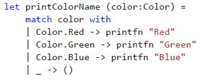
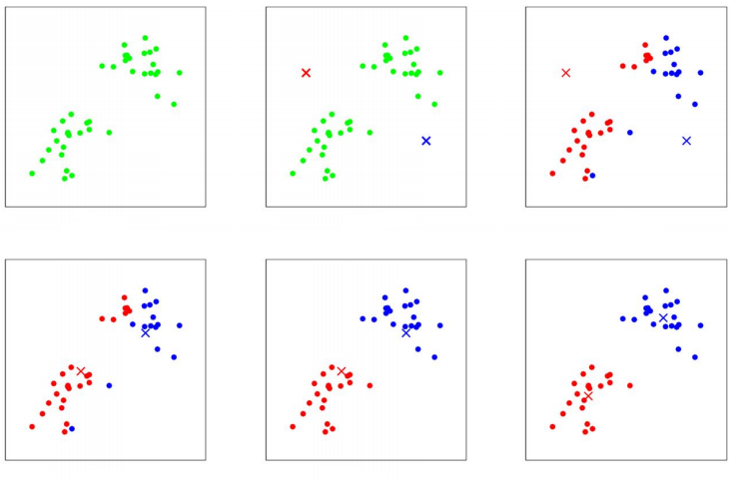

Machine Learning?
Machine Learning is not something from the distant future already, it's already here. And if you haven't done this yet, there is a significant probability that you'll have to face with machine learning in your day to day job tomorrow. It can be applied to the majority of existing areas - they all have data. We can always analyze and learn from data.
Is it easy?
Machine Learning is not an easy topic, it requires at least basic understanding of what's going on under the hood to learn from data efficiently. But Machine Learning is not so hard either. If you don't want to spend a huge amount of time writing the implementations of the algorithms by yourself, there are existing tools that you may already start using and apply Machine Learning for your project just now. For example, .NET has an amazing framework called Accord.NET.
F# language fits for machine learning because functional programming is really suitable to use for machine learning tasks and data tasks that often precede the actual resolution of some machine learning problem.
What is it?
What is machine learning? There are a lot of different definitions. The basic idea is: when we have data we want to get the largest amount of useful information from it. Having some archive or collection of some domain specific data we can use it for analysis and learn from it to be more precise in the future. Even if we don't know anything about the data and we still intend to somehow identify this information and to learn something from it - we can still do it with machine learning.
When you are new to machine learning and have no special mathematical background it may seem a bit unclear when you see all the variety of existing techniques and algorithms from the first glance. But as you go deeper and deeper, you start understanding the structure of Machine Learning. By structure I mean algorithms and approaches we can use to learn something from data, having the goal to predict some values for the future based on what we already know. As opposed to the usual way programs solve problems - by having a predefined algorithm and following the steps there to find out the result.. If we are using the machine learning program we don't have the prediction algorithm with predefined steps, here the program may gain experience, the program may learn from it's experience and use the experience to produce more accurate results for the future.
When you decide to begin diving into machine learning you'll face some fundamental things on your checklist before actually starting doing machine learning.
Why?
First of all, the goal or .. the reason why you decided to do machine learning. If you have a clear business oriented reason for using machine learning - that may simplify the process of diving into the topic. There are a lot of areas that use it: recommendation systems, text data analysis with the purpose of spam detection for example, prediction of demand, detection of anomalies, recognition of unspecified items, audio and video related problems and a great amount of other areas. In addition to areas there are different domains where we can apply it - biology, finance, media, technology, science, and really, all domains can learn something from their data, if there is a necessity.
What is your data?
The next thing you will face is data. With machine learning you can work with any kind of data, but almost all information needs preparation and pre-processing before using the data. In the vast majority of scenarios, the more clean, accurate and consistent your data is, the more easy, clear and fast machine learning process would be. However, it is possible not in all cases, simply because your data might be very big and way too unstructured. It might be so big that amount of processing efforts will be rather expensive, so it might be even cheaper to use less prepared data during machine learning as-is. If you have a chance to make the form in which data is stored more clean and more precise and to simplify the way you access data - it can dramatically influence the machine learning process and can make it much easier to choose the correct approaches and algorithms.
Just for instance, I wanted to collect some data as an answer to my strictly schemed question and to look what part of data will be really suitable for usage and what data will require extra processing and preparation. So I made an experiment on twitter and created the hashtag #lenadroidexperiment.
I suggested my followers to post a tweet with that hashtag and to post their favorite music genre, then comma, and then their favorite programming language. And what do you think? So these people on twitter, instead of helping me to dive into my machine learning adventure with perfectly structured data... they completely messed up my expected schema!
So, as you see, some of them literally on purpose posted some invalid data... Some of them were polite and EVEN said sorry about that... Some of them had a moment of indecision and instead of choosing the favorite programming language trey claimed that all programming languages suck!
This example is really really true. In reality you won't have ideally prepared data and you'd just have to spend time on its preparation. Some data scientists say that periodically they spend 70% of their task solving time on data optimization. To be able to efficiently learn something from data - its representation is important. However, not all individuals or companies who use machine learning have the goal to find and use the most elegant way or algorithm. Some of these people are interested in just getting the job done and spending the minimal amount of costs and efforts on this. This is another criteria your approach may vary.
How?
Eventually, after the goal is set and data is ready - time to define the strategy of how the goal should be accomplished. To be able to choose the correct approach and way to deal with the task, to be able to do that you'd need the understanding of the available ways and approaches and differences between each of them to pick the most suitable one. And to gain such understanding the minimal thing you'd have to do is to get the idea of some structure of machine learning algorithms and types of algorithms.
In this blog post you'll see 3 simple examples of how you may use machine learning and how to start with it just today. You'll see one regression problem, one problem on classification and one machine learning problem on clustering.
We will be using F# for the examples!
Why F# for machine learning and data science?
As I have already mentioned above, functional programming and fsharp really suit for doing data science. But now I want to be more specific here. Accord.NET is written in C# initially. So.. Why F#? Why use F# for working with data?
Exploratory programming
F# is the best language based on .NET for exploratory programming, prototyping, modeling and scripting. It provides pretty nice and convenient environment - F# Interactive is a great tool to try out algorithms and code in an interactive and responsive way, where you can see the feedback momentarily. You can write in the interactive window directly, or execute your .fsx scripts in the interactive way. This flexibility is vital for data scientists who spend a lot of time experimenting with data, creating data pipelines, formatting and preparing data for the further usage.
Referential Transparency
If you write your jobs in a functional way, then your functions can be mostly described by what they take as an input and what they produce as a return value. This is also called referential transparency. In essence this means that the expression can be replaced with its result without affecting the program's behavior. So if they compile and give you the expected result today, they'll likely keep producing the right result in the future as well.
Data pipelines
Functional style also aims to help in constructing your logic as simple, repeatable actions that can be abstracted out into a function and then when logic becomes more complex, we can use function composition by calling these simple functions in sequence. And the real benefit here is that our programs are constructed of small and clear pieces that are less error prone and easier to understand. Here is an example of data flow pipeline in fsharp.
One of the examples where we have some input data and a series of step by step actions or transformations, and the final aggregating operation at the end. Just look how logical and neat this code looks!
Algebraic data types
F# has algebraic data types - particularly in functional programming and type theory, an algebraic data type is a kind of composite type - a type formed by combining other types. F# has tuples, records, discriminated unions.
Pattern Matching
Often values of algebraic types are analyzed with pattern matching. With pattern matching it becomes really easy to work with data structures and make a flow against specified parameters where deconstruction is done automatically.
Strong typing and type inference
Strong typing and type inference really help to focus on real task you want to solve rather than on caring about types, because F# compiler infers type information for us.
Type Providers
F# has a type providers feature that supports information rich programming and simplifies working with data, when the schema is stable at runtime and during the lifetime of compiled code. The type providers for structured file formats infer the structure of a sample. The structure is then used to provide easy to use type-safe access to documents that follow the same structure.
If you know R language that is The R Type Provider makes it possible to use all of R capabilities, from the F# interactive environment. It enables on-the-fly charting and data analysis using R packages, with the added benefit of IntelliSense over R, and compile-time type-checking that the R functions you are using exist. It allows you to leverage all of .NET libraries, as well as F# unique capabilities to access and manipulate data from a wide variety of sources via Type Providers. There is FSharp.Data for tons of formats.
Units of Measure
FSharp offers the unique units of measure feature that allows us to escape some conversion mistakes that often take place when doing data science.
Distributed Programming
Using F# also facilitates distributed programming, because in functional programming the emphasis is put on composition of functions and functions can be combined, sent remotely, applied locally on distributed data sets and other different things. Also, with immutable data structures you can forget about data race conditions.
Concurrent Programming
Concurrent programming becomes totally easier by escaping side-effects and mutable variables and facilitating code distribution over several CPU. Since functions do not make implicit effects, you can call them as many times as you want, even in different threads, without having to worry about the state of the program.
So, I am using F# for machine learning and data science because it has undeniable advantages and has full interoperability with C# code. If I can, then why not?
Algorithms
Linear Regression
The first algorithm is called linear regression. In general, we can use linear regression for prediction of some numeric values, for example, the number of bike rentals to expect some day in the future. This is the simplest machine learning algorithm, but once you understand the approach - it's much easier to understand other algorithms.
Suppose we want to predict something, let it be the exchange rate for some day in the future. Regression is the prediction of some number from a continuous range. In supervised machine learning we always have training data - where we have inputs and already known outputs, and test data - where we just have inputs, outputs are something to be predicted. Inputs here can be political situation, financial conditions, weekday, working day, weather, holiday, etc. The idea of linear regression is to find a function that will fit the training samples in the most optimal way. Here imagine that each training sample corresponds to one point on the picture.
The idea is to draw the line that would fit all points the best way. Anyway, let's look how linear regression works. How can we even predict something? It's simple - we can make a guess, then find out what is the mistake of our guess, and after that - fix our mistake.
So, the first step is ... to make a guess!
The simplest case of linear regression is when we have only one input parameter and one output parameter. It's as if we were about to predict the exchange rate based on only financial conditions. Then we can locate all our training data on the 2D picture and make a guess. That means, we are trying to draw the line that should ideally fit our data, but as it's the guess, it is obviously wrong initially.
But what does it actually mean, to make a guess? The guess we were making - in the simplest case - it is a line. As you know from the high school, a straight line is represented as a function f(x) = ax + b. To draw the random guess line we need to know at least two points to draw it through. So to make a guess literally means to choose two random points we are going to draw the line through. That is the simplest case. If we have N input parameters or predictors we'd have to think of N random values to make a guess. This random values we'll call theta parameters, they are also often called weights.
Now we have training data and we have a guess that we've made. At this point, the goal is to measure how wrong we are and what is the mistake. How can we do it? With the training data we have both inputs and already known outputs for them. What we can do now is to send our inputs from the training set to our guess function that we've made and to compare the output of the guess function and the actual known output that we have for the given data sample from the training set.To compare it we are defining our COST function or MISTAKE function.
It is defined as the squared error function that, for each data sample from the training data finds the difference between the guess and the output. Basically, what the mistake function gives us - it shows how wrong our randomly selected weights or theta parameters are. What are we going to do with the mistake? We want to reduce the mistake in our guess!
To reduce the mistake we should minimize our mistake function - we should find the minimum of the mistake function, so we'll know the point where our guess is least wrong.
And why do we need this all? To find out the correct values of weights so we'll be able to make the perfect fit for our data!
What does it look like?
To imagine the cost or mistake function, it can look like this:
When our initial guess theta parameters are wrong, we would be located at the random point on the shape. When we are minimizing the mistake function, we should literally find the way from the point we are to the minimum of the function. But how do we know where the minimum is? First, we can find out the direction, where we should move from our point towards the minimum. How can we find the direction? If we find the derivative of the mistake function at the point we are - it can be either positive or negative. Positive means that the tangent is directed from the left to right and minimum is on the left, so we should move left. If it's negative, it means minimum is on the right and we should move right toward the minimum. In addition to the direction of moving towards the minimum we should define the learning rate, that is the size of the step we are making. If the step is too big then we can overjump the minimum. If it's too small we may learn very slowly.
The process of moving towards the minimum until we reach it is basically the simultaneous update of all our random guess theta parameters:
When we update each theta parameter we are updating it to move the direction of the minimum with the step defined by the learning rate. Here the learning rate is alpha. The direction is defined from the partial derivative of the mistake function for the given theta parameter. And we are doing this iteratively until we end up at the minimum, where the derivative should be either 0, or very close to 0.
When we have done the minimization of the mistake function that means we know the correct values for the weights or theta parameters and we can use it to finally fix our guess and draw the ideal fit.
Now let's look at the more complex example. Suppose we have several predictors, several features.. and an output. Let's say we want to predict the demand on bike rentals some day in the future. We have some statistical data about the bikes and we want to guess how many of them will be rented some day in the future. The data about bikes can be obtained here. Let's take a look at the code:
What to remember about Linear Regression?
- Simplest regression algorithm
- Very fast, runs in constant time
- Good at numerical data with lots of features
- Output from numerical continuous range
- Has linear hypothesis function
- Uses gradient descent for fixing the mistake
Logistic Regression
We can use Logistic Regression to identify to which class our value belongs to. For example, we can predict the class of wine based on the constitution characteristics of the wine. Logistic Regression is a classification algorithm, even though it's name contains the word regression. Output is not a number from some continuous range - output is the category - black or white, yes or no. General Logistic regression is a classification algorithm that may have only two categories in the output, so it's binary classification.
Here we also have our guess or hypothesis function, but it is a bit different. In the simplest Linear Regression it was a line, here - as the outcome is categorical - we have the guess function that outputs the estimated probability that the output would be equal to one for the given set of inputs. This function is called sigmoid or logistics function.
And here we also have the set of random theta parameters or weights, that are located in the degree of e at the bottom part of the equation.
The mistake function here for each training sample can be divided into two parts. As for each training example our outcome can be either one category or another category, so either 0 or 1. Then, if the actual outcome for the data sample of predictors is really 1, and our guess function outputs 0 (which is wrong) - then the mistake should grow when the guess decreases. That is a blue line on the picture below. If the real outcome is 0, and our guess is 1, which is wrong again - then out mistake should increase as our guess value increases. That is a green line on the picture below. That is the mistake function for separate training data samples.
The full mistake function for all data samples is just the sum of the mistake function results of the each training data sample:
As in the previous function it uses the principle of max likelihood estimation and we minimize it the same way we did with Linear Regression. After that we'll know the correct set of theta parameters to make our guess perfect finally.
Now let's look at the code example that uses Logistic Regression.
Yeah, what if we want to have more than one predictor?
Let's have a look at another problem. Let's say we have a classification problem where we have more than one category. For simplicity, let's take the Wine Dataset from here. It contains some constitutional attributes of the wine and we want to determine the class of the wine. In that particular dataset it might belong to one of the three categories. And yeah, let's divide the dataset into test data and train data, so we will teach the algorithm using train data and check how well we were able to teach the machine using the test dataset (take 70 or 80% for training and 30 or 20 for testing). Let's have a look at the code:
What to remember about Logistic Regression?
- Classification algorithm
- Good for relatively small number of predictors
- Uses logistics function for hypothesis
- Has the cost function that is convex
- Uses gradient descent for correcting the mistake
At this point...it may seem that...
What I really do is...
Clustering with K-Means
The next example I want to show is not about training data and testing data. Here we will just have data and we would like to group this data somehow, to find clusters, to find how the pieces in our data are connected or related to each other. This type of machine learning is called unsupervised machine learning and we will have a look at the K-Means algorithm right now. We will take some indicators of the countries situation from the World Bank Datasets and have a look at the world picture we will get after performing the clustering algorithm. But before that, let's look how the algorithm works.
In the algorithm, K is the number of clusters we want to find. Initially, our data is unstructured (picture #1), so we say the machine that we want to identify K clusters from the given data. The next thing we do is, as usual, doing some random guesses.. So we are randomly choosing the location of K cluster centroids. And the cluster centroids represent our current guesses for the positions of the centers of the clusters. To initialize the cluster centroids we could choose k data examples randomly, and set the cluster centroids to be equal to the values of these k examples (picture #2). And then we will be performing the assignments of the each data example to the closest cluster centroid (picture #3), and then, after all samples are marked – we are moving each cluster centroid to the mean of the points assigned to it (picture #4). And we are performing all these steps (steps as in the pictures #3 - #4) until we find ourselves in the position when the cluster centroids don't move anymore because they are in the right, mean location (last picture).
Going directly to the code!
I hope you have enjoyed reading this blog post and don't be scared to try some machine learning in your real projects.